Поскольку прогулочные суда обязаны не только уступать дорогу профессиональным судам, но и не мешать их манёврам, важно знать их намерения.
При встрече судов идущий вверх по течению должен уступить место хуже маневрирующему судну, идущему вниз по течению. Обычно оба держатся правой стороны и расходятся левыми бортами.
Если судно, идущее вверх по течению, хочет пропустить встречное судно справа, оно должно показать это со стороны правого борта.
Судно, намеренное обогнать, должно заранее убедиться, что это безопасно. Если нет, оно должно подать звуковой сигнал, указав, с какой стороны будет обгон.
Судно впереди должно облегчить обгон и при необходимости уменьшить скорость.
Днём в зоне действия Правил внутреннего судоходства суда на якоре не обязаны выставлять сигнальные знаки.
Ночью они несут белый круговой огонь со стороны фарватера, даже если пришвартованы у берега.
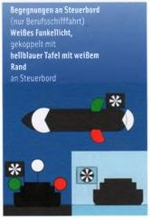
Встречи по правому борту (только для коммерческого судоходства): Белый мерцающий свет в сочетании со светло-голубой панелью с белыми полосами по правому борту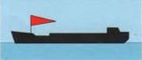
Судно с приоритетом: Красный вымпел. Приоритет в шлюзах, в узких проходах и т.п.
Стоящее судно — белый круговой огонь со стороны фарватера
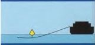
 Неподвижное судно, якорь
которого может представлять опасность для судоходства,
должно вывести два белых круговых огня, расположенных один над другим, со стороны фарватера.
Днём якорь должен быть обозначен жёлтым буем, возможно с радиолокационным отражателем
Неподвижное судно, якорь
которого может представлять опасность для судоходства,
должно вывести два белых круговых огня, расположенных один над другим, со стороны фарватера.
Днём якорь должен быть обозначен жёлтым буем, возможно с радиолокационным отражателем
Дноуглубительные или гидрографические суда во время работы, а также севшие на мель или затонувшие суда.
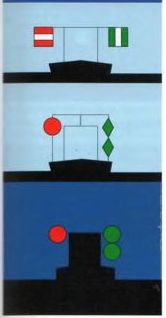
Днем: красно-бело-красный щит или красный шар
Ночью: Красный круговой огонь на той же высоте, что и верхний зелёный круговой огонь на противоположной стороне
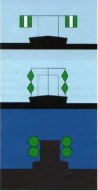
Днём: Проход свободен с обеих сторон — зелёно‑бело‑зелёные полосатые щиты или зелёные двойные конусы
Ночью: Зелёные круговые огни
Водолазы работают
Ночью: табличка должна быть освещена
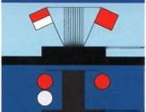
Для защиты от засасывания и волн - Проход с одной стороны ограничен
Днём: На ограниченной стороне вывешивается красный флаг
Ночью: На ограниченной стороне загорается красный мигающий свет на том же уровне, что и красный мигающий свет на противоположной стороне
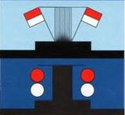
Проход с обеих сторон свободен
Днём: Красно‑белые флаги
Ночью: Красные круговые огни над белыми круговыми огнями
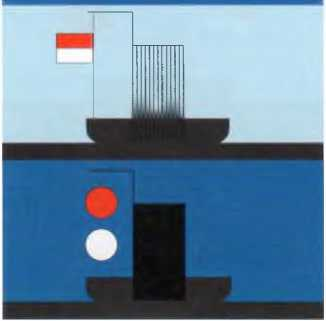
Днём: Красно‑белые флаги
Ночью: Красный круговой огнь 1м над белым круговым огнем
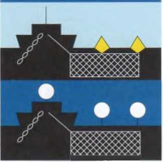
Днём: Жёлтые буи в достаточном количестве для обозначения положения
Ночью: Соответствующие белые круговые огни
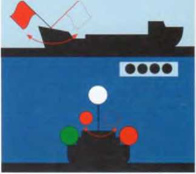
Только при приближении судна на курсе столкновения
Днём: Красный флаг или табличка, размахиваемая полукругом
Ночью: Красный огонь, раскачиваемый из стороны в сторону
Дополнительный звуковой сигнал: 4 коротких звука подряд
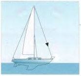
Днём на носу должен быть хорошо видимый чёрный конус (длина стороны около 0,60 м) вершиной вниз. Он не требуется, если паруса не поставлены.
Медленное поднятие и опускание вытянутых в стороны рук — общепринятый, но не официальный сигнал бедствия. Сигналы бедствия разрешается подавать только при реальной опасности для жизни или судна.
Днём: Размахивание флагом или предметом по кругу
Ночью: Огнём, которым машут по кругу
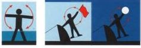